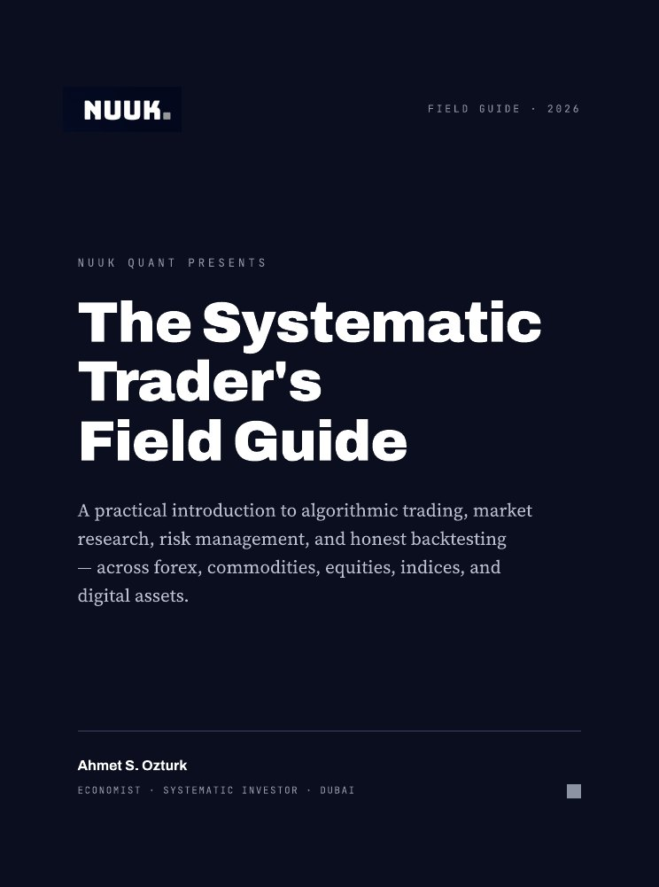

$2,290
$499one-time
Founding member price · First intake
Pay once · No monthly or hidden fees · Crypto (USDT) payments only for now
For traders tired of guessing
Learn the method we use at NUUK every day, from start to finish: finance fundamentals, algorithmic trading, Gann's price and time analysis, and coding your own financial system with AI.
Good trading desks don't win by drawing more lines. They run a system with clear rules, proper testing and risk worked out in advance. What's missing isn't another tool; it's a different way of thinking.
The problemisn't your indicator.
It's not havinga system.
Signal groupswon't fix that.
A system you buildyourself will.
Whether you're starting from zero or have watched charts for years, this programme closes the gap between reading a chart and running a system with clear rules.
Outcomes
Written risk rules and a tool that sizes every position for you.
At least one strategy that has been backtested and walk-forward validated.
Your own Gann indicator and level rules tested on historical data.
A trading robot (EA) built with AI that runs on MT4/MT5.
A personal dashboard that shows all your accounts and trades on one screen.
Curriculum
Six modules, from zero to advanced. From your first candlestick chart to your own system coded with AI.
By the end of the module: your own market watch dashboard and a weekly macro note.
By the end of the module: written risk rules and an automatic position size calculator.
By the end of the module: your first strategy, backtested and walk-forward validated.
By the end of the module: your own Gann indicator and level rules tested on historical data.
By the end of the module: a working trading robot built with AI and your personal trading dashboard.
By the end of the module: a tested trading system of your own that you monitor from your own dashboard.
One of the tools from Module 4
Enter a price to see possible support and resistance levels from Gann's square-root method. In the module you'll learn to code these levels and test them on historical data.
This tool is for teaching purposes only; it is not a trading signal or investment advice.
Module 5
You don't need to be a developer. You'll learn to describe exactly what you want, test the code that comes back and run it safely. NUUK's own systems were built this way.
The difference
Who made this programme
Every method in the programme comes from work we actually do on the desk, not theory collected from books.
The 17 years and 3,000+ figures come from NUUK's own records, as published on nuukquant.com.

Ahmet Öztürk
Founder, NUUK Quant
He built the desk's trading robots, the investor dashboard, the mobile app and the data infrastructure himself, with AI. In this programme he shows, step by step, how those systems were built.
Who it's for
Module 1 starts from the very basics. Follow the order and you never wonder where to begin; each week builds on the one before.
You can read a chart, but your results are inconsistent. You'll learn to write your rules down, turn them into code and test them.
You already have the technical skills. Combine them with market structure, risk management and Gann, and you get a system that works.
Pricing
$2,290
$499one-time
Founding member price · First intake
Pay once · No monthly or hidden fees · Crypto (USDT) payments only for now


Book
The Systematic Trader's Field Guide: a practical introduction to algorithmic trading, market research, risk management and honest backtesting, across forex, commodities, equities, indices and digital assets.
$29.99one-time · both editions
Sample: cover, contents, introduction and Chapter 1 · Türkçe örnek
FAQ
No. Module 1 starts from the very basics and the topics build in order. You finish every module with something concrete, so you always know where you are.
No. That's exactly what the coding with AI module is for: you learn to tell the AI what you want, test the code it writes and run it safely. If you already code, you'll move faster.
Three to four hours a week is enough to keep up with the lessons and live sessions. The demo test in the final project runs on its own; you just check the results each day.
MetaTrader 4 or 5, Python, VS Code and an AI coding tool (Claude Code or Cursor). All of them have a free version or a trial. The monthly fee for the AI tool is not included.
No. This is an education programme. NUUK does not accept money for investment, does not manage accounts and does not promise profits. Our aim is for you to make your own decisions and build your own system.
Some Gann rules give statistically meaningful results in some markets, and some don't. In the Gann Lab you learn to test these rules rather than believe them, and to drop the ones that don't work.
Both. You watch the recorded lessons at your own pace, and every week we go through the market and the code together in a live session and answer your questions.
Tap "Reserve your place" and you'll be chatting with us directly on WhatsApp. Your message opens ready to send. "Get the book" works the same way.
For now we only accept crypto (USDT). When you message us on WhatsApp, we'll send you our USDT wallet address.
Yes. You pay $499 once; there is no monthly or yearly fee. The modules, templates, WhatsApp community and live sessions are all included.